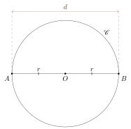

Eclats de vers : Matemat : Géométrie plane
Table des matières
1. Point
Le point est l’élément le plus fondamental en géométrie. Les autres objets sont définis, soit comme un ensemble de points, soit comme une fonction agissant sur des points.
On note par convention un point par une lettre majuscule.
2. Plan
Un plan \(\Pi\) est une surface plane composée d’un ensemble de points qui s’étend à l’infini.
3. Droite
3.1. Définition
Une droite \(d\) est un ensemble de points alignés sur une ligne droite infinie. On note une droite par une lettre minuscule.
Le schéma ci-dessous représente une droite \(d\) :
Une droite est complètement déterminée par deux de ses points. Si on connaît deux points \(A\) et \(B\) appartenant à une droite \(d\), on peut donc s’en servir pour désigner \(d\). Dans le schéma ci-dessous :
la droite \(d\) peut aussi se noter :
\[ (AB) \]
On a donc :
\[ d = (AB) \]
3.2. Sécantes
On dit que deux droites \(a\) et \(b\) sont sécantes si elles se croisent en un point \(P\) :
\[ a \cap b = \{ P \} \]
Le point \(P\) est alors appelé point d’intersection de \(a\) et \(b\).
Le schéma ci-dessous représenté un exemple de deux droites sécantes \(a\) et \(b\) qui s’interctent au point \(P\) :
3.3. Points alignés
On dit d’une série de points qu’ils sont alignés si ils appartiennent à une meme droite.
3.4. Autres notations
On ne note pas toujours les parenthèses :
\[ AB = (AB) \]
4. Demi-droite
Si on coupe une droite \((AB)\) en deux au niveau du point \(A\), et que l’on conserve la partie contenant le point \(B\), on obtient la demi-droite \([AB)\).
Le schéma ci-dessous donne un exemple de demi-droite :
4.1. Origine
Le point \(A\) est appelé origine de la demi-droite \([AB)\).
4.2. Ouverte ou fermée
Il existe plusieurs variantes de demi-droite :
- un demi-droite est dite fermée si elle contient son origine \(A\)
- on la note \([AB)\)
- un demi-droite est dite ouverte si elle ne contient pas son origine \(A\)
- on la note \(]AB)\)
4.3. Autres notations
On ne note pas toujours la parenthèse :
\[ [AB = [AB) \]
On peut aussi noter une demi-droite par une lettre minuscule :
\[ d = [AB) \]
5. Segment
5.1. Définition
Si on coupe une droite \((AB)\) au niveau des points \(A\) et $B, et que l’on conserve la partie située entre \(A\) et \(B\), on obtient un segment \([A,B]\).
Le schéma ci-dessous donne un exemple de segment :
Il existe plusieurs variantes de segments :
- le segment \([A,B]\) contient les deux extrémités \(A\) et \(B\)
- le segment \(]A,B[\) ne contient ni \(A\) ni \(B\)
- le segment \([A,B[\) contient \(A\) mais pas \(B\)
- le segment \(]A,B]\) contient \(B\) mais pas \(A\)
5.2. Extrémités
Les extrémités d’un segment \([A,B]\) sont simplement les points \(A\) et \(B\) qui délimitent ce segment.
Il est clair que les extrémités d’un segment suffisent à le définir.
5.3. Droite prolongeant un segment
On dit qu’une droite \(d\) prolonge un segment \([A,B]\) si les points \(A\) et \(B\) appartiennent à \(d\), autrement dit si :
\[ d = (AB) \]
5.4. Autres notations
On ne note pas toujours la virgule :
\[ [AB] = [A,B] \]
Une lettre minuscule peut aussi servir à désigner un segment :
\[ s = [A,B] \]
5.5. Mesure et construction
On utilise une règle graduée pour :
- mesurer la longueur d’un segment
- tracer un segment de longueur donnée
6. Distance
6.1. Introduction
La distance entre deux points \(A\) et \(B\) se note :
\[ \abs{AB} \]
ou encore :
\[ \distance(A,B) \]
Cette distance est la longueur du plus court chemin qui mène de \(A\) à \(B\), c’est-à-dire la longueur du segment \([A,B]\) qui les sépare :
\[ \abs{AB} = \Bigl|[A,B]\Bigr| \]
6.2. Propriétés générales
Il est clair qu’une distance entre deux points est positive :
\[ \abs{AB} \ge 0 \]
Elle est également symétrique puisqu'on obtient la même distance lorsqu'on intervertit les points :
\[ \abs{AB} = \abs{BA} \]
Par ailleurs, la distance entre deux points identiques doit évidemment être nulle :
\[\abs{AA} = 0\]
Le seul point \(Y\) qui peut se trouver à distance nulle de \(X\) est le point \(X\) lui-même :
\[\abs{XY} = 0 \quad \Longrightarrow \quad X = Y\]
6.3. Inégalité triangulaire
Il est toujours plus court d'aller directement du point \(A\) au point \(B\) plutôt que de passer par un point intermédiaire \(C\). On a donc l'inégalité triangulaire :
\[ \abs{AB} \le \abs{AC} + \abs{CB} \]
Dans le cas où les trois points \(A\), \(C\) et \(B\) sont alignés et dans l’ordre présenté ci-dessous :
on a clairement :
\[ \abs{AB} = \abs{AC} + \abs{CB} \]
L’inégalité triangulaire devient alors une égalité.
Par contre, si les trois points ne sont pas alignés :
l’inégalité triangulaire est clairement stricte :
\[ \abs{AB} < \abs{AC} + \abs{CB} \]
6.4. Isométrie
On dit que deux segments sont isométriques lorsqu’ils ont la même longueur.
7. Parallèles
7.1. Droites
On dit que deux droites \(a\) et \(b\) sont parallèles si elles ne se croisent pas :
\[ a \cap b = \emptyset \]
ou si elles sont confondues :
\[ a = b \]
Si deux droites \(a\) et \(b\) sont parallèles, on le note :
\[ a \parallel b \]
Le schéma ci-dessous représenté un exemple de deux droites parallèles \(a\) et \(b\) :
7.2. Segments
On dit que deux segments \([A,B]\) et \([C,D]\) sont parallèles lorsque les droites qui les prolongent sont parallèles :
\[ [A,B] \parallel [C,D] \qquad \Longleftrightarrow \qquad (AB) \parallel (CD) \]
7.3. Droite et segment
On dit qu’une droite \(d\) est parallèle à un segment \([A,B]\) lorsque la droite qui prolonge \([A,B]\) est parallèle à \(d\) :
\[ d \parallel [A,B] \qquad \Longleftrightarrow \qquad d \parallel (AB) \]
8. Circuit
8.1. Introduction
Certaines figures géométriques forment un circuit. Ce circuit est généralement composé de segments et de courbes.
8.2. Polygone
Un polygone est une figure géométrique délimitée par des segments reliant des points pour former un circuit fermé. Chaque point du circuit est appelé sommet du polygone, tandis que chaque segment est appelé côté du polygone.
8.3. Périmètre
Le périmètre d’une figure géométrique formant un circuit est la longueur parcourue le long de ce circuit.
9. Cercle
9.1. Définition
Un cercle \(\mathscr{C}\) de centre \(O\) et de rayon \(r\) est l’ensemble des points situés à une distance \(r\) du point \(O\) :
On note aussi :
\[ \mathscr{C}[O, r] \]
le cercle \(\mathscr{C}\) de centre \(O\) et de rayon \(r\). On a donc :
\[ r = \abs{OP} \]
pour tout \(P \in \mathscr{C}(O, r)\). Si \(\Pi\) est le plan dans lequel le cercle \(\mathscr{C}\) est tracé, on a :
\[ \mathscr{C}(O, r) = \{ P \in \Pi : \abs{OP} = r \} \]
Remarque : ne pas confondre la lettre \(O\), qui désigne un point, avec le neutre pour l’addition \(0\).
9.2. Rayon
Le rayon d’un cercle \(\mathscr{C}\) de centre \(O\) est à la fois :
- la distance entre le centre \(O\) et n’importe quel point \(P \in \mathscr{C}\)
- le segment \([O,P]\) qui relie le centre \(O\) à n’importe quel point \(P \in \mathscr{C}\)
9.3. Corde
Une corde du cercle \(\mathscr{C}\) est un segment qui relie deux points de \(\mathscr{C}\).
Le schéma ci-dessous représenté une corde \([A,B]\) du cercle \(\mathscr{C}\) :
9.4. Tangente
Une droite \(t\) est dite tangente au cercle \(\mathscr{C}\) au point \(A\) si \(t\) intersecte \(\mathscr{C}\) seulement en \(A\) :
\[ t \cap \mathscr{C} = \{ A \} \]
Le schéma ci-dessous représenté la droite \(t = (AB)\), tangente au cercle \(\mathscr{C}\) au point \(A\) :
9.5. Diamètre
Soit un cercle \(\mathscr{C}\) de centre \(O\) et de rayon \(r\). Un diamètre de \(\mathscr{C}\) est une corde qui passe par le centre \(O\).
Le schéma ci-dessous représenté un cercle \(\mathscr{C}\) de centre \(O\) et de rayon \(r\) et un diamètre \([A,B]\) :

Les points \(A\) et \(B\) appartiennent donc au cercle \(\mathscr{C}\) et sont alignés avec \(O\).
Le terme de diamètre désigne aussi la distance entre les extrémités du segment-diamètre. Dans l’exemple du schéma, on a le diamètre \(d\) :
\[ d = \abs{AB} \]
Comme le segment \([A,B]\) englobe deux fois le rayon \(r\), on a :
\[ d = 2 \ r \]
Cette distance est donc la même pour tous les segments-diamètres d’un cercle donné, et vaut le double du rayon du cercle.
9.6. Nombre \(\pi\)
Il va de soi que tous les cercles de rayon \(1\) ont le même périmètre \(\mathcal{P}_1\). Le nombre \(\pi\) est défini comme valant la moitié de ce périmètre :
\[ \pi = \frac{\mathcal{P}_1}{2} \]
Le périmètre d’un cercle de rayon \(1\) vaut donc :
\[ \mathcal{P}_1 = 2 \ \pi \]
9.7. Arc de cercle
Un arc de cercle \(\Gamma\) est une partie d’un cercle \(\mathscr{C}\) comprise entre deux points. Un arc de cercle possède les mêmes propriétés que le cercle dont il est issu : si \(\mathscr{C}\) est de centre \(O\) et de rayon \(r\), on dit également que \(\Gamma\) est de centre \(O\) et de rayon \(r\).
Le schéma ci-dessous représente un arc de cercle \(\Gamma\) (en trait plein) de centre \(O\) et compris entre les points \(A\) et \(B\) :
Le reste du cercle dont \(\mathscr{C}\) est issu est représenté en tirets.
On désigne également un arc de cercle par un arc tracé au-dessus des points extrêmes qui le délimitent. Suivant le schéma ci-dessus, on a par exemple :
\[ \Gamma = \arcdecercle{AB} \]
9.7.1. Longueur
La longeur d’un arc de cercle :
\[ \Gamma = \arcdecercle{AB} \]
peut être notée :
\[ \abs{\Gamma} = \abs{\arcdecercle{AB}} \]
9.7.2. Fraction d’un cercle unitaire
Considérons un arc issu d’un cercle de rayon \(1\) et engloblant une fraction \(f\) du cercle. Sa longueur vaudra :
\[ 2 \ \pi \ f \]
Le tableau ci-dessous recense quelques cas courants :
| Partie du cercle | \(f\) | Longueur |
|---|---|---|
| complet | \(1\) | \(2 \ \pi\) |
| moitié | \(1/2\) | \(\pi\) |
| tiers | \(1/3\) | \(2 \ \pi / 3\) |
| quart | \(1/4\) | \(\pi / 2\) |
| sixième | \(1/6\) | \(\pi / 3\) |
10. Disque
10.1. Définition
Un disque \(\mathscr{D}\) de centre \(O\) et de rayon \(r\) est l’ensemble des points situé sur ou à l’intérieur du cercle \(\mathscr{C}(O,r)\). On le note aussi :
\[ \mathscr{D}[O, r] \]
Si \(\Pi\) est le plan dans lequel le disque \(\mathscr{D}\) est tracé, on a :
\[ \mathscr{D}(O, r) = \{ P \in \Pi : \abs{OP} \le r \} \]
10.2. Secteur angulaire
Un secteur angulaire est un ensemble de point compris entre :
- un arc de cercle \(\Gamma\)
- les rayons \([O,A]\) et \([O,B]\) correspondant aux extrémités \(A\) et \(B\) de \(\Gamma\)
Le schéma suivant représente un secteur angulaire \(\mathscr{S}\) :
Remarque : les points situés sur l’arc de cercle ou sur les rayons sont inclus dans le secteur angulaire.
11. Droite orientée
Une droite orienté est une droite à laquelle on donne un sens de progression, d’un point de la droite vers un autre. La progression ne se limite toutefois pas au segment compris entre ces deux points : on peut partir de n’importe quel point de la droite, et progresser aussi loin qu’on le souhaite. Dans cet ouvrage, je note :
\[ (A \to B) \]
une droite orientée \((AB)\) progressant de \(A\) vers \(B\).
Le schéma ci-dessous représente un exemple de droite orientée \((A \to B)\) :
12. Segment orienté
12.1. Définition
Un segment orienté est un segment auquel on donne un sens de progression, d’une extrémité du segment vers l’autre. Dans cet ouvrage, je note :
\[ [A \to B] \]
un segment orienté \([A,B]\) progressant de \(A\) vers \(B\).
Le schéma ci-dessous représente un exemple de segment orienté \([A \to B]\) :
12.2. Nomenclature
- le point \(A\) est appelé origine ou point de départ du segment orienté \([A \to B]\) :
- le point \(B\) est appelé destination du segment orienté \([A \to B]\) :
12.3. Caractéristiques
Un segment orienté \([A \to B]\) est caractérisé par :
- les points \(A\) et \(B\), extrémités du segment
- une longueur \(\abs{AB}\)
- une droite \((AB)\) dans laquelle il est inclus, qui donne sa direction
- un sens de progression de \(A\) vers \(B\)
12.4. Équivalence
On considère que deux segments orientés \([A \to B]\) et \([C \to D]\) sont équivalents si :
- ils ont la même longueur : \(\abs{AB} = \abs{CD}\)
- ils ont la même direction : la droite \((AB)\) est parallèle à la droite \((CD)\)
- ils ont un sens de progression identique
Nous allons à présent définir précisément ce que signifie un sens de progression identique.
12.4.1. Droites non confondues
Examinons le cas où les droites \((AB)\) et \((CD)\) sont distinctes.
12.4.1.1. Sens identique
Pour que le sens de progression de \([A \to B]\) soit identique au sens de progression de \([C \to D]\), il faut et il suffit que les segments \([A,C]\) et \([B,D]\) ne se croisent pas, comme dans le schéma ci-dessous :
12.4.1.2. Sens opposés
Par contre, dans le schéma ci-dessous, les segments orientés \([E \to F]\) et \([G \to H]\) ne sont pas équivalents car les segments \([E,G]\) et \([F,H]\) se croisent, ce qui signifie que les sens de progressions sont opposés :
12.4.2. Droites confondues
Lorsque les droites :
\[ d = (AB) = (CD) \]
sont confondues, il suffit de vérifier que l’on progresse dans le même sens sur la droite \(d\) pour aller de \(A\) vers \(B\) ou de \(C\) vers \(D\).
12.4.2.1. Sens identique
Le schéma ci-dessous représente deux segments orientés \([A \to B]\) et \([C \to D]\) qui progressent dans le même sens :
Ces deux segments orientés sont donc équivalents. Une autre façon de déterminer si les sens sont les mêmes est de comparer les distances. Comme les points sont alignés, on a :
\[ \abs{AC} = \abs{AB} + \abs{BC} \]
\[ \abs{BD} = \abs{BC} + \abs{CD} \]
En soustrayant la seconde équation de la première, on obtient :
\[ \abs{AC} - \abs{BD} = \abs{AB} + \abs{BC} - \abs{BC} - \abs{CD} \]
Simplifions les \(\abs{BC}\) :
\[ \abs{AC} - \abs{BD} = \abs{AB} - \abs{CD} \]
Comme :
\[ \abs{AB} = \abs{CD} \]
on a :
\[ \abs{AC} - \abs{BD} = 0 \]
c’est-à-dire :
\[ \abs{AC} = \abs{BD} \]
Lorsque les sens de progressions des deux segments orientés sont les mêmes, la longeur du segment \([A,C]\) reliant les points de départ doit être identique à la longueur du segment \([B,D]\) reliant les points d’arrivée.
12.4.2.2. Sens opposés
Par contre, dans le schéma ci-dessous, les segments orientés \([E \to F]\) et \([G \to H]\) ne sont pas équivalents car les sens de progressions sont clairement opposés :
La longeur du segment \([E,G]\) reliant les points de départ est d’ailleurs différente de la longueur du segment \([F,H]\) reliant les points d’arrivée :
\[ \abs{EG} \ne \abs{FH} \]
13. Vecteur géométrique
13.1. Définition
Un vecteur géométrique est une classe d’équivalence de segments orientés : on considère que des segments orientés équivalents entre-eux représentent le même vecteur.
Le vecteur associé au segment \([A \to B]\) est noté :
\[ \vecteur{AB} \]
Le segment orienté \([A \to B]\), ainsi que toutes ses copies par translation, sont donc considèrés comme des représentants du vecteur \(\vecteur{AB}\).
Comme tous les segments orientés équivalents à \([A \to B]\) possèdent :
- une même longueur
- une même direction
- un même sens de progression
le vecteur \(\vecteur{AB}\) est entièrement déterminé par les mêmes caractéristiques.
13.2. Notation
On peut aussi désigner un vecteur géométrique par une lettre minuscule surmontée d’une flèche. Un vecteur qui progresse du point \(A\) vers le point \(B\) peut être noté :
\[ \vecteur{u} = \vecteur{AB} \]